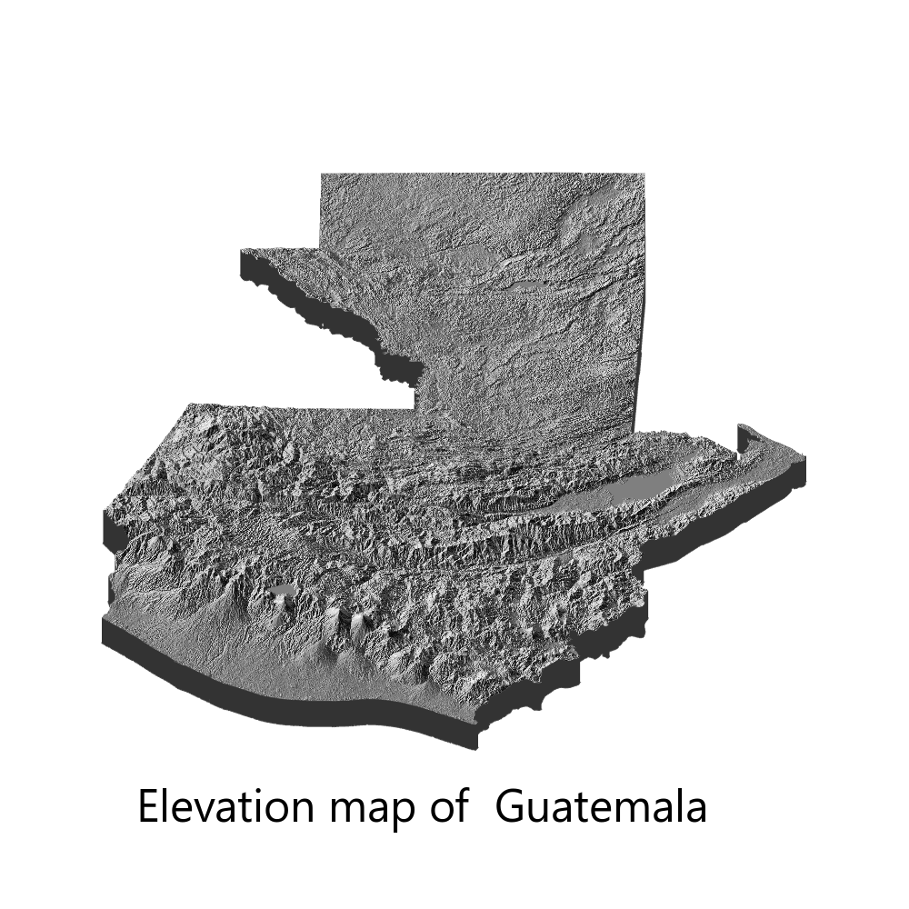

I have been in a long hiatus from posting anything on my website. Just when I thought I was gaining some momentum with making regular posts a lot of things started to happen (experiments, paper submissions, corrections…). So today’s post is going to be simple. I saw Amit Levinson’s Tweet in the #30DayMapChallenge about Israel’s 3d elevation map and it inspired me to do something similar. My goal here was to create an elevation map of my home country, Guatemala.
First, I had to get the sph file with the map data. I used the data provided by DIVA_GIS, unzipped the contents and placed everything in a folder. I am by no means a map expert, but it seems that not only the .shp file is necessary to visualize the map; the other files (dbf, prj, etc) are also necessary. So first we load our packages, and read the map data.
The syntax was hard for me to understand (a geocomputation illiterate), but I found information here about the puzzling 4326 in the st_transformline. It basically indicates which Coordinate Reference System (CRS) is to be used (4326 is the code for the Spatial Reference System Identifier EPSG).
library(elevatr)
library(rayshader)
library(sf)
library(here)
library(rgdal)
library(magick)
gtdata<-read_sf("content/blog/2021-11-09-30-day-map-challenge/data/GTM_adm0.shp")
#Transform to st. Spatial Reference System Identifier (SRID). EPSG:4326
gtdata<-st_transform(gtdata,4326)And now we move to the fun part. Using {rayshader} we will first get the raster elevation data using get_elev_raster and then transform the raster data to a matrix using raster_to_matrix. Finally, we will plot the map in 3d and save it.
#elevation data
gtraster <- get_elev_raster(locations = gtdata, z = 9, clip = "locations")
#Convert to matrix for rayshader plotting
gtrayshader <- raster_to_matrix(gtraster)
#plot in 3d
gtrayshader %>%
sphere_shade(texture = "bw") %>%
plot_3d(gtrayshader, zscale = 50,
fov = 0,
theta = 0,
zoom = 0.9,
phi = 50,
windowsize = c(1000, 1000))
#save it
render_snapshot(filename="content/blog/2021-11-09-30-day-map-challenge/Guatemala",
title_text = "Elevation map of Guatemala",
title_offset = c(150,850),
title_size = 50,
title_font = 'Helvetica'
)And the result? This beauty:

And I have to say, achieving this in 9 lines of code (minus loading packages and function options) is truly impressive! You can check the excellent {rayshader} documentation here here.
Well, that is all for now, but I will be back soon (hopefully) with another post.